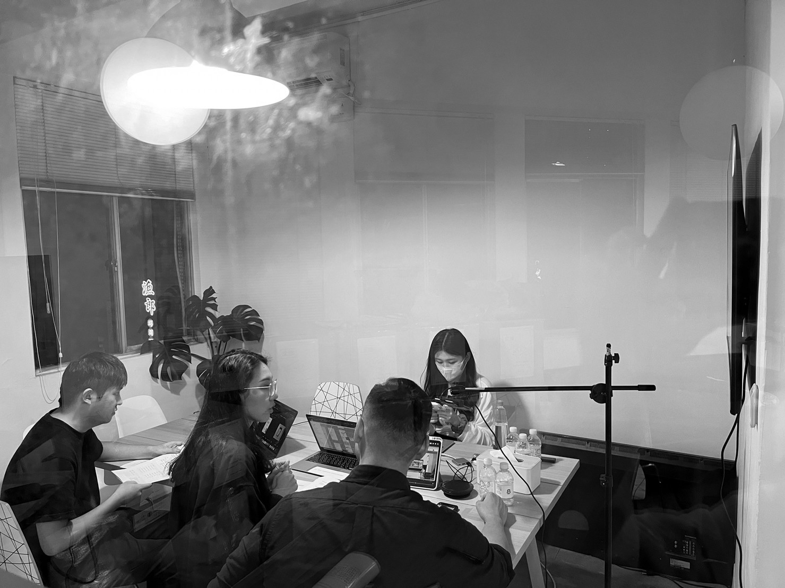
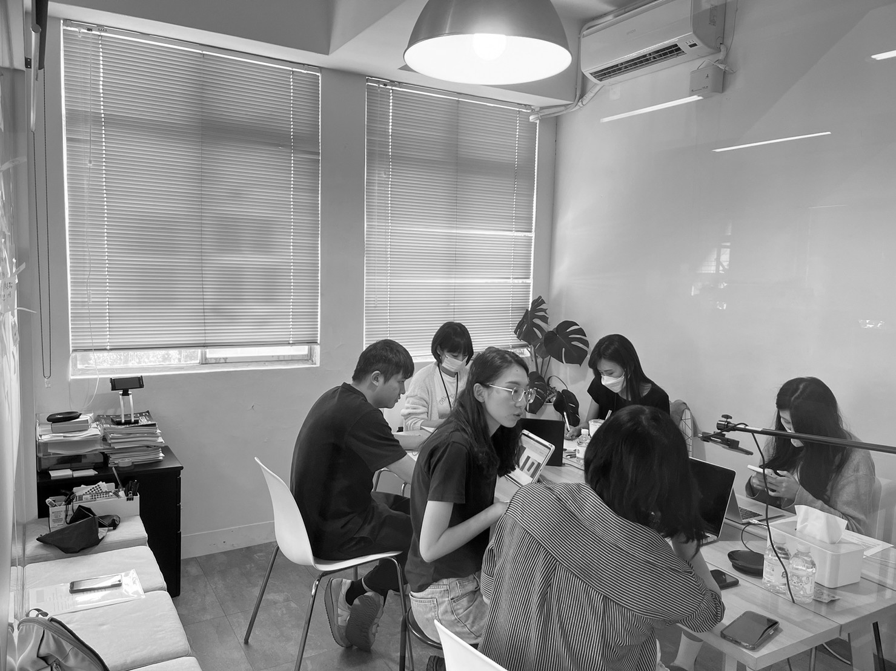
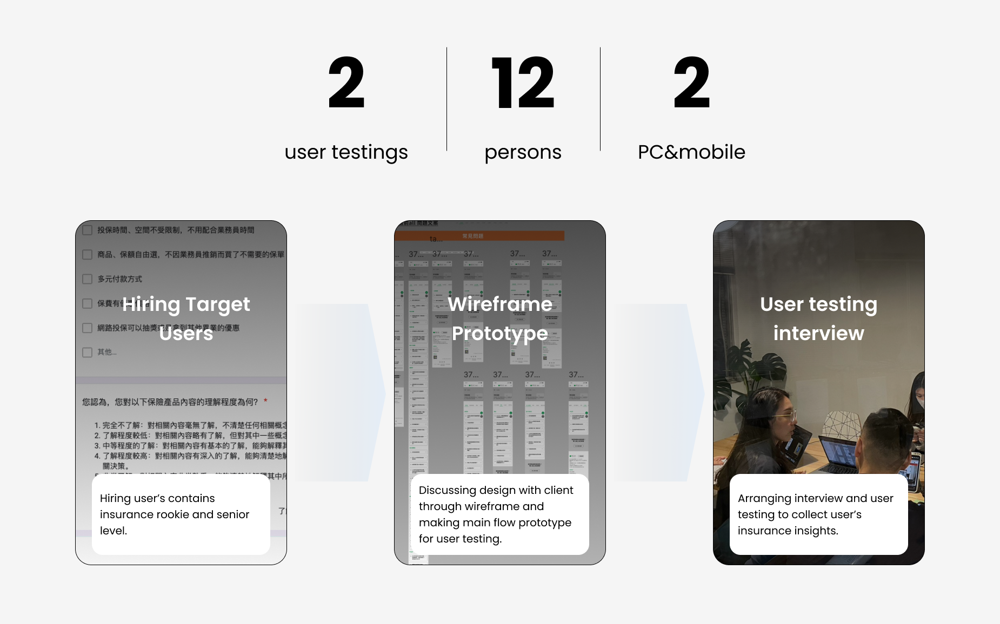
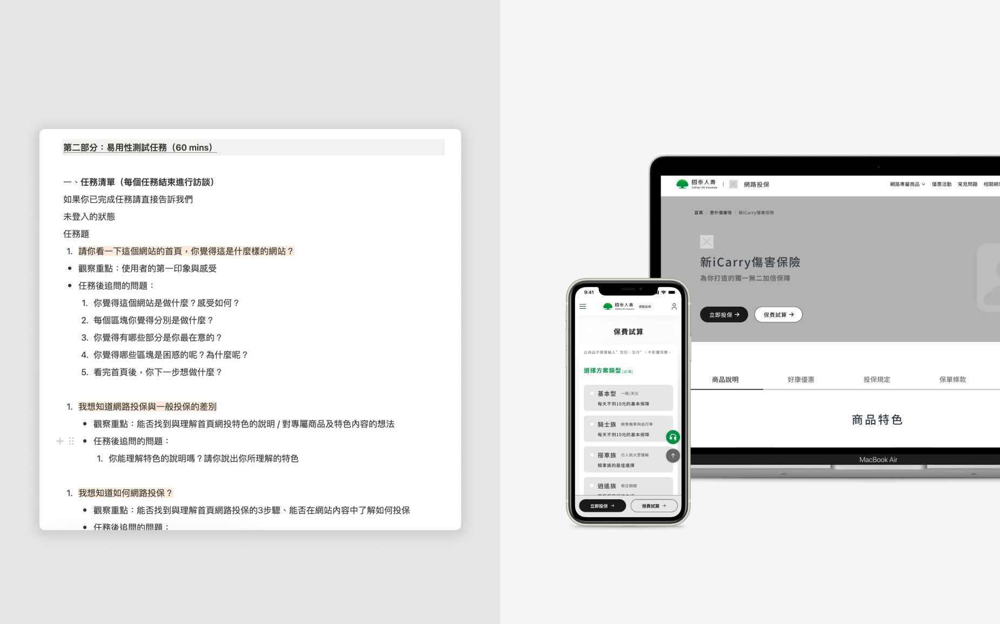
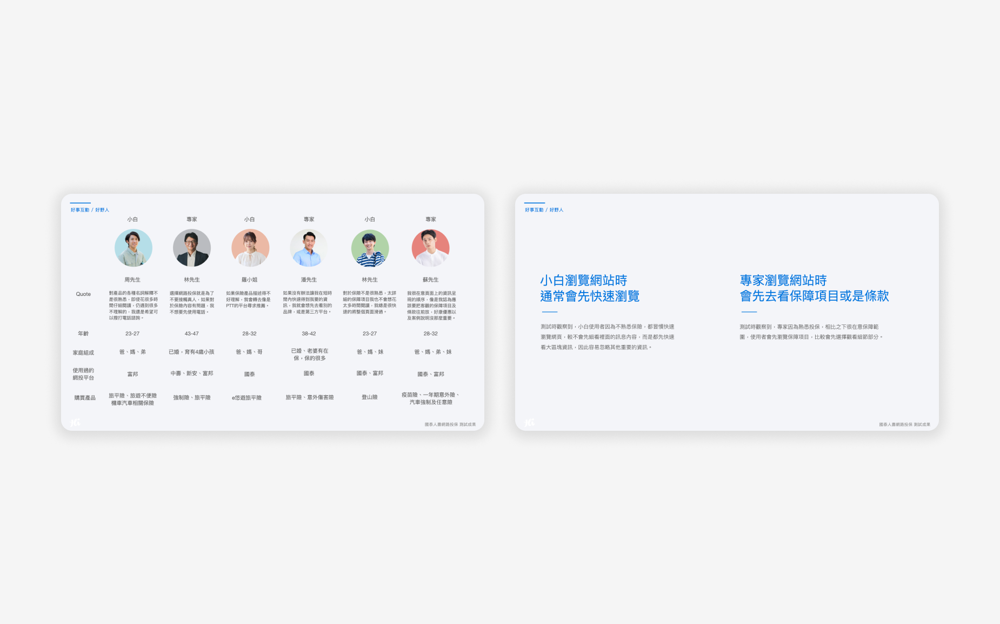
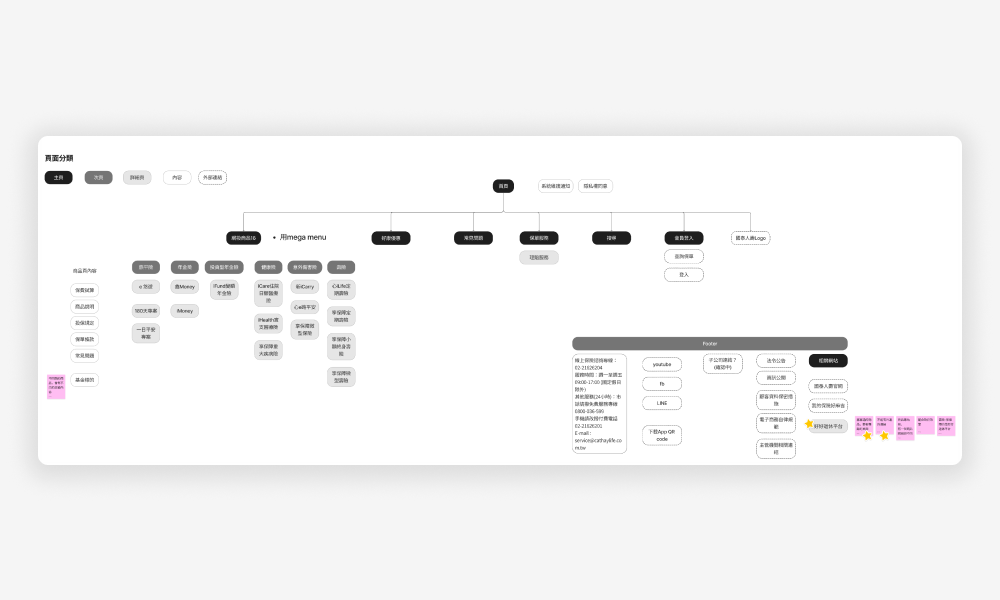
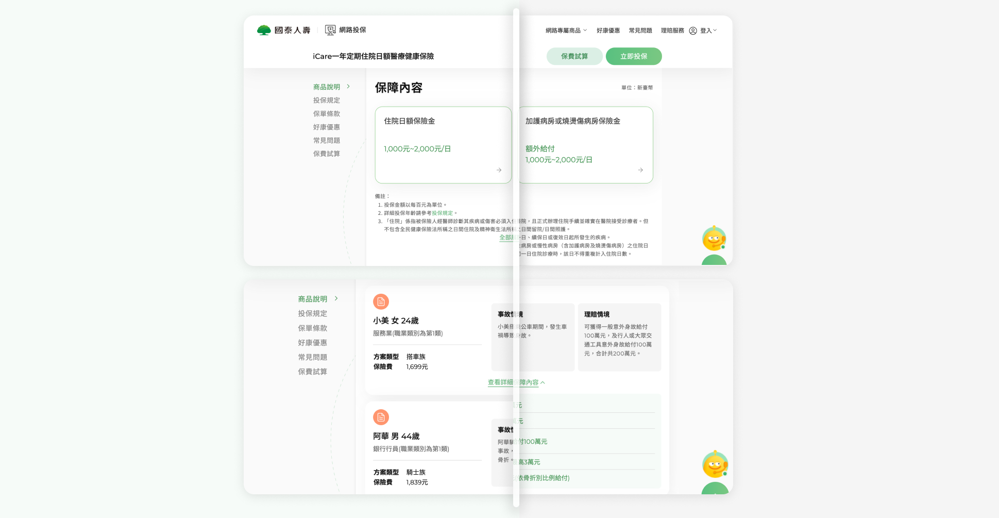
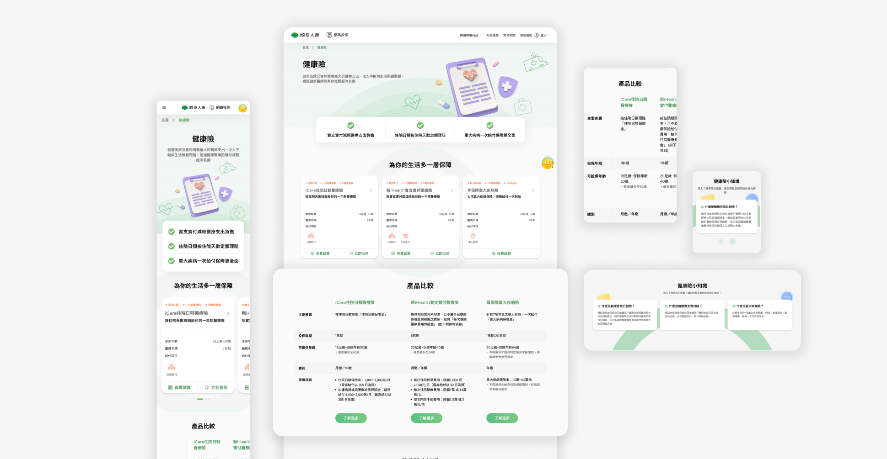
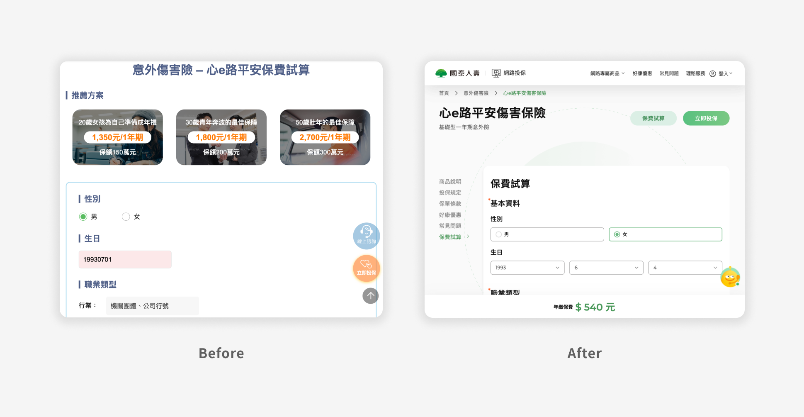
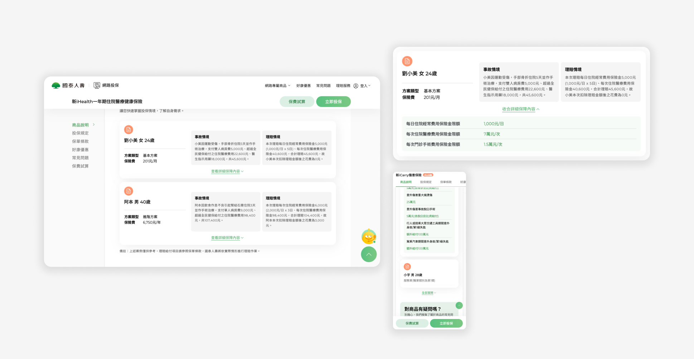

UX designer
Context
Why revamp?
To enhance user engagement and encourage insurance purchases.
To refresh the visual design and ensure consistency with the updated brand identity.
Challenge
What we needed to solve
- Organizing complex insurance concepts
- Aligning UI guidelines with the existing website design
- Refining and prioritizing user feedback requirements
- Developing a consistent structure across all products
Outcome
What we shipped
Strategy
Three design principles
Consistency
Ensure that all products follow a uniform information structure, making it easier for users to navigate and compare options.
Straightforward
Utilize clear marketing language and a well-structured information hierarchy, making it easy for users to compare products and determine which one best meets their needs.
Flexible
Users can browse the pages in a way that feels tailored to their needs — whether taking a quick glance at essential details or exploring more in-depth information when desired.
Research
User testing interview before UI design
We co-hosted two usability test interviews with our clients, aiming to collect user feedback on the new design to continuously optimize our design.
This opportunity also helped clients understand what insurance information target users need when selecting insurance, enabling digital users to manage their insurance more seamlessly.




FigJam research synthesis board

Insight presentation to stakeholders

Interview guide and prototype used in testing

User research data and personas
Structure
Final structure and roadmap
Site map — After 2 rounds of user testing interviews, we defined the final structure with the client to let the SA team get into the design flow.

Road map — Define the UI design milestone and arrange the following checkpoint for design and development.

Design
Highlight features
Flexible Reviewing Experience
Implemented a layered information approach — key details are displayed upfront, while more complex information is collapsed and accessible only when needed.

Streamlined Insurance Overview
This new layer, absent from the original site, simplifies insurance by offering clear product categories, enabling quick comparisons, and providing brief explanations to guide users.

Focused Calculator Experience
Replaced confusing shortcuts with helpful hints for data entry.
Simplified the flow into clear steps: input, coverage review, and cost display. Insurance fees stay fixed at the bottom, making it easy to see how changes affect pricing.

Breaking Up Content into Visual Blocks
Case Studies: Organized with a clear structure — background, insurance needs, incidents, and claims. It makes different products easier to compare and helps users find what they need.

Reflection
Takeaways
User interviews
Despite having strong user research validating design decisions, implementation often faces significant organizational hurdles that can delay or prevent changes from being realized.
Keep communicating
Real-time communication proved to be essential for building client trust throughout this project. Though I was initially hesitant to ask questions as a newcomer to insurance products, consistent communication ultimately accelerated alignment and built trust.
Next Step